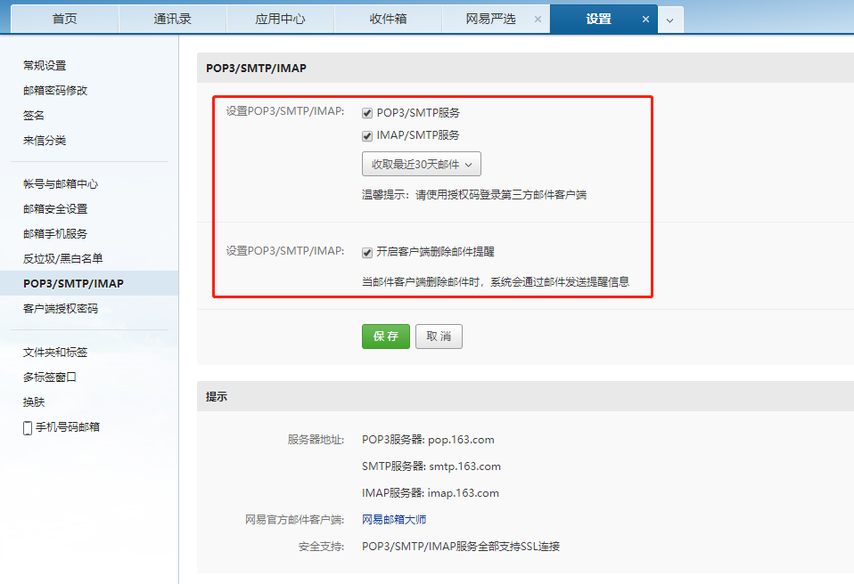
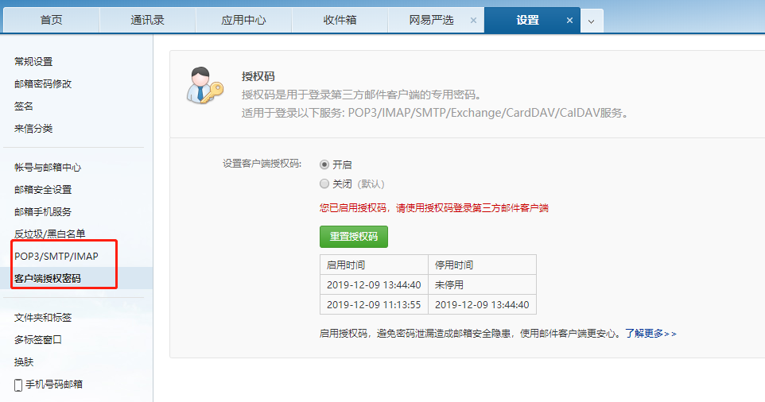
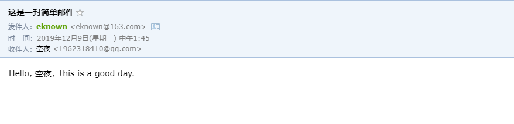
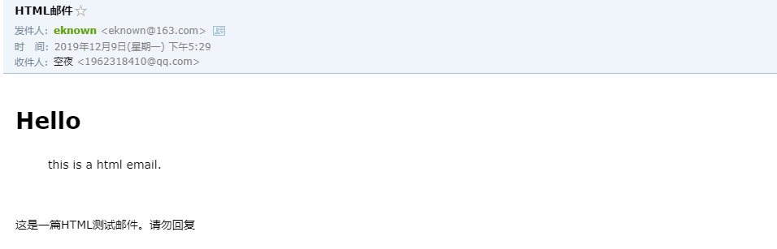
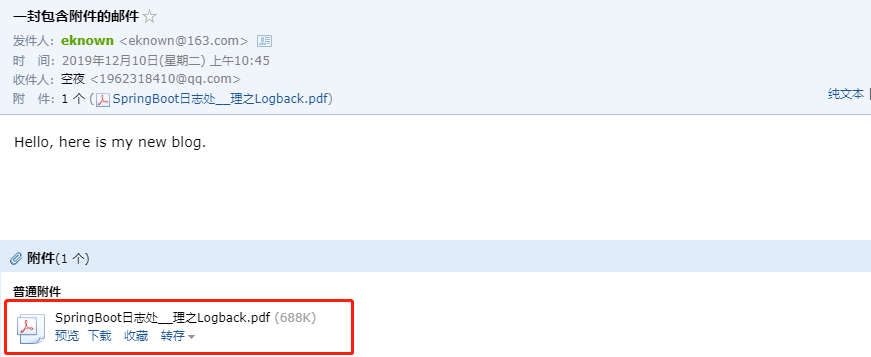
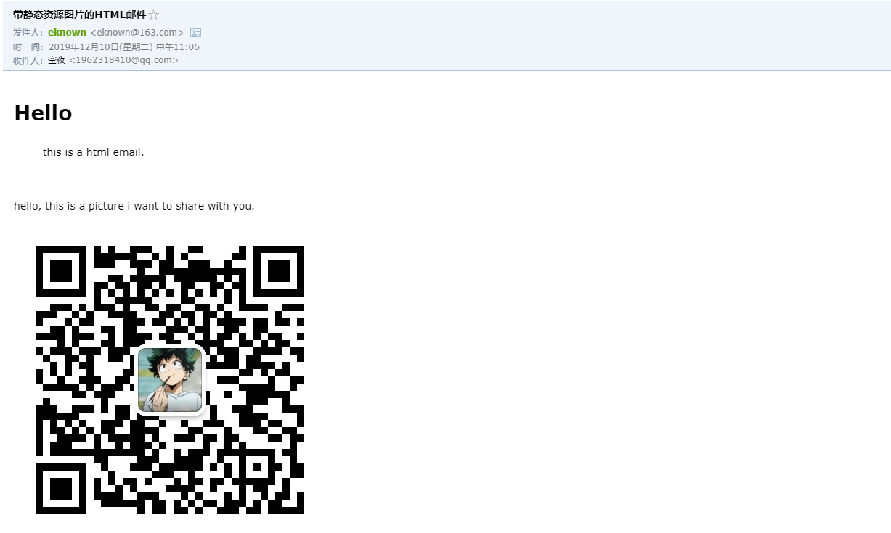
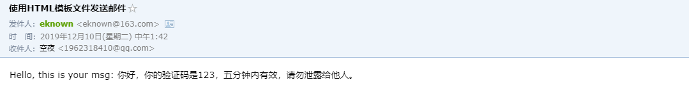

本节介绍SpringBoot项目如何快速配置和发送邮件，包括简单的邮件配置、发送简单邮件、发送HTML邮件、发送携带附件的邮件等。
示例源码在：https://github.com/laolunsi/spring-boot-examples
要确保使用的邮箱开启了客户端登录服务，以163邮箱为例：


注意在发送邮件的配置中，填写的用户名是邮箱地址，密码是这里的授权码。其他邮箱如QQ、企业邮箱也是类似的配置，不懂的建议百度哦，不是很复杂的。
下面我们直接进入示例吧：
创建一个SpringBoot项目，引入如下依赖：
<dependency>
<groupId>org.springframework.boot</groupId>
<artifactId>spring-boot-starter-mail</artifactId>
</dependency>注：其他依赖按照自己的需求添加即可，如有问题可以参考示例项目。
填写配置信息：
server:
port: 8012
spring:
mail:
host: 'smtp.163.com'
username: 'xxx@163.com'
password: 'xxxx' # 授权码编写测试接口：
@RestController
@RequestMapping(value = "email")
public class EmailAction {
@Value("${spring.mail.username}")
private String sendName;
private final JavaMailSender mailSender; // 也可以使用AutoWired
public EmailAction(JavaMailSender mailSender) {
this.mailSender = mailSender;
}
@PostMapping(value = "simple")
public String sendSimpleMsg(String msg, String email) {
if (StringUtils.isEmpty(msg) || StringUtils.isEmpty(email)) {
return "请输入要发送消息和目标邮箱";
}
try {
SimpleMailMessage mail = new SimpleMailMessage();
mail.setFrom(sendName);
mail.setTo(email);
mail.setSubject("这是一封简单邮件");
mail.setText(msg);
mailSender.send(mail);
return "发送成功";
} catch (Exception ex) {
ex.printStackTrace();
return "发送失败:" + ex.getMessage();
}
}
}测试一下：

除了普通的文本格式邮件，邮件还可以是HTML格式的，这样就可以自定义丰富的样式啦！
发送HTML邮件也很简单，在发送邮件时指定内容为HTML即可：
@PostMapping(value = "html")
public String sendHtmlMsg(String msg, String email) {
if (StringUtils.isEmpty(msg) || StringUtils.isEmpty(email)) {
return "请输入要发送消息和目标邮箱";
}
try {
MimeMessage message = mailSender.createMimeMessage();
MimeMessageHelper messageHelper = new MimeMessageHelper(message, true);
messageHelper.setFrom(sendName);
messageHelper.setTo(email);
messageHelper.setSubject("HTML邮件");
String html = "<div><h1><a name=\"hello\"></a><span>Hello</span></h1><blockquote><p><span>this is a html email.</span></p></blockquote><p> </p><p><span>"
+ msg + "</span></p></div>";
messageHelper.setText(html, true);
mailSender.send(message);
return "发送成功";
} catch (MessagingException e) {
e.printStackTrace();
return "发送失败：" + e.getMessage();
}
}
有时候需要发送携带附件的邮件，比如投递简历，通常会携带一个PDF文件。
我们这里在resources下添加一个PDF文件，然后发送邮件时携带这个文件：
@PostMapping(value = "mime_with_file")
public String sendWithFile(String msg, String email) {
if (StringUtils.isEmpty(msg) || StringUtils.isEmpty(email)) {
return "请输入要发送消息和目标邮箱";
}
try {
MimeMessage message = mailSender.createMimeMessage();
MimeMessageHelper messageHelper = new MimeMessageHelper(message, true);
messageHelper.setFrom(sendName);
messageHelper.setTo(email);
messageHelper.setSubject("一封包含附件的邮件");
messageHelper.setText(msg);
// 该文件位于resources目录下
// 文件路径不能直接写文件名，系统会报错找不到路径，而IDEA却能直接映射过去
// 文件路径可以写成相对路径src/main/resources/x.pdf，也可以用绝对路径：System.getProperty("user.dir") + "/src/main/resources/x.pdf"
File file = new File("src/main/resources/SpringBoot日志处理之Logback.pdf");
//File file = new File(System.getProperty("user.dir") + "/src/main/resources/SpringBoot日志处理之Logback.pdf");
System.out.println("文件是否存在：" + file.exists());
messageHelper.addAttachment(file.getName(), file);
mailSender.send(message);
return "发送成功";
} catch (MessagingException e) {
e.printStackTrace();
return "发送失败：" + e.getMessage();
}
}测试一下：

如果HTML邮件包含图片等静态资源怎么办呢？即将图片显示在邮件中，这样邮件接收者就不用下载附件才能看到图片内容了。而且邮件内容也更加丰富了。
这个功能也很简单，使用addInline即可，可以这样做：
@PostMapping(value = "html_with_img")
public String sendHtmlWithImg(String msg, String email) {
if (StringUtils.isEmpty(msg) || StringUtils.isEmpty(email)) {
return "请输入要发送消息和目标邮箱";
}
try {
MimeMessage message = mailSender.createMimeMessage();
MimeMessageHelper messageHelper = new MimeMessageHelper(message, true);
messageHelper.setFrom(sendName);
messageHelper.setTo(email);
messageHelper.setSubject("带静态资源图片的HTML邮件");
String html = "<div><h1><a name=\"hello\"></a><span>Hello</span></h1><blockquote><p><span>this is a html email.</span></p></blockquote><p> </p><p><span>"
+ msg + "</span></p><img src='cid:myImg' /></div>";
messageHelper.setText(html, true);
File file = new File("src/main/resources/wei.jpg");
messageHelper.addInline("myImg", file);
mailSender.send(message);
return "发送成功";
} catch (MessagingException e) {
e.printStackTrace();
return "发送失败：" + e.getMessage();
}
}
利用模板引擎，比如thymeleaf，还可以通过模板文件来发送邮件：
首先引入spring-boot-starter-thymeleaf依赖：
<dependency>
<groupId>org.springframework.boot</groupId>
<artifactId>spring-boot-starter-thymeleaf</artifactId>
</dependency>在resources下新建一个templates文件夹，下面创建一个EmailTemplate.html文件：
<!DOCTYPE html>
<html lang="zh" xmlns:th="http://www.thymeleaf.org">
<head>
<meta charset="UTF-8" />
<title>邮件模板</title>
</head>
<body>
Hello, this is your msg: <span th:text="${msg}"></span>
</body>
</html>@Autowired
private TemplateEngine templateEngine;
@PostMapping(value = "html_with_template")
public String sendHtmlByTemplate(String msg, String email) {
if (StringUtils.isEmpty(msg) || StringUtils.isEmpty(email)) {
return "请输入要发送消息和目标邮箱";
}
try {
MimeMessage message = mailSender.createMimeMessage();
MimeMessageHelper messageHelper = new MimeMessageHelper(message, true);
messageHelper.setFrom(sendName);
messageHelper.setTo(email);
messageHelper.setSubject("使用HTML模板文件发送邮件");
Context context = new Context();
context.setVariable("msg", msg);
messageHelper.setText(templateEngine.process("EmailTemplate", context), true);
mailSender.send(message);
return "发送成功";
} catch (MessagingException e) {
e.printStackTrace();
return "发送失败：" + e.getMessage();
}
}
参考：https://mrbird.cc/Spring-Boot-Email.html